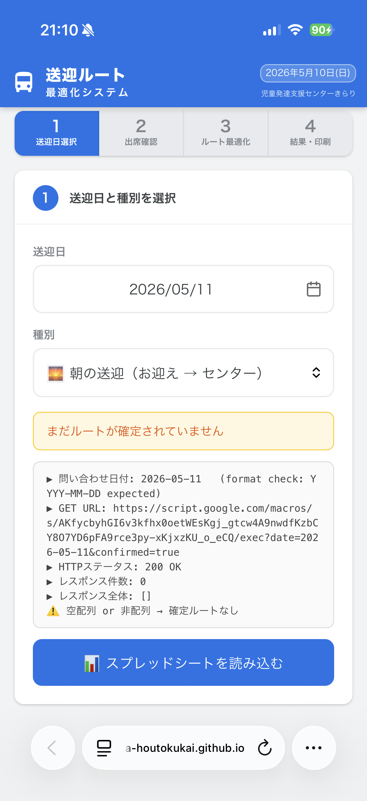
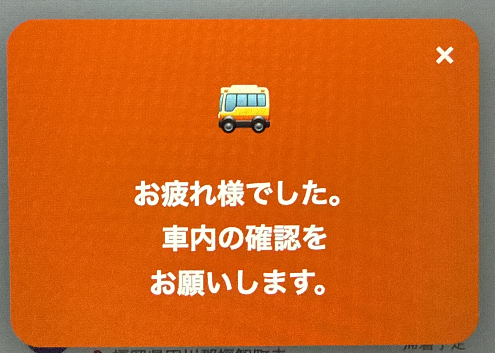

事業所へ
電話
1
送迎日選択
2
出席確認
3
ルート最適化
4
結果・印刷
1
送迎日と種別を選択
送迎日
種別
アンパンマン号
ドラえもん号
👥 利用者を読み込む
2
出席確認
NO
名前
自宅住所
出席曜日
乗車時間
出席
全員出席
3
推奨出発時刻・ルート最適化
⏱ 推奨出発時刻を計算
余裕
1分
2分
3分
4分
5分
出発時刻
🗺️ ルートを最適化する
4
最適化ルート
ルートを計算中…
ルートを最適化するとここに地図が表示されます
🚀 出発・共有開始
🏁 帰着
全停車地の出発記録後に押してください
🖨️ 印刷・PDF保存
⚠️ 復帰する
確定を解除して編集可能に戻します
×

欠席理由を選択
① 体調不良
② 用事
③ 家族送迎
④ その他
キャンセル
添乗者モード
きらりに切替